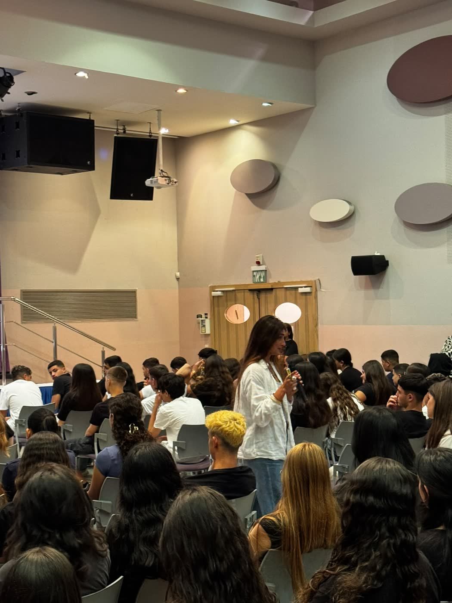

הרצאות ומפגשים
לארגונים, חברות, רשויות, מוסדות חינוך וקבוצות נוער – על מנהיגות, חוסן, בחירה ואחדות.
שמחה לביא · יזמית ופעילה חברתית | מרצה | מייסדת ONE SHOT
אני מחברת בין עולמות, אנשים והזדמנויות.
מתוך הדרך שעברתי והעשייה בשטח, אני פועלת עם רשויות, ארגונים ומוסדות כדי לצמצם פערים ולפתוח דלתות לנוער ולחברה הישראלית.
הסיפור שלי

ביתר עילית | נקודת ההתחלה
11
גדלתי בחברה החרדית. בגיל 11 עזבתי את הבית והתחלתי לחפש מקום שאוכל לקרוא לו בית.
הפנימייה | לחפש קרקע יציבה
עברתי בין מסגרות ונחשפתי למציאות מורכבת. בדיעבד הבנתי שלא חיפשתי הרבה:
קרקע יציבה, ומבוגר אחד שיראה בי פוטנציאל.

צה״ל | מפיקוד למנהיגות
התגייסתי כלוחמת ויצאתי לקורס קצינים. כקצינה לוחמת פיקדתי על חיילים וחיילות מכל קצוות החברה הישראלית והובלתי מבצעים התקפיים.
שם למדתי שאפשר להגיע מעולמות שונים לחלוטין – ועדיין לעמוד יחד.

הפציעה | לבחור בתיקון
נפצעתי קשה במהלך השירות. מתוך המשבר בחרתי להוביל תהליך של צדק מאחה מול האדם שפגע בי, בשיתוף גורמים ממערכת המשפט.
למדתי שגם כשהמסגרת הצבאית מסתיימת – השליחות ממשיכה.

ONE SHOT | מהסיפור האישי לעשייה
הקמתי את ONE SHOT, והפניתי את הכלים שלי בתוכן, שיווק ויזמות לקידום מטרות חברתיות ולצמצום פערים.
נערה בסיכוי. נגד כל הסיכויים.
לא תמיד אפשר לבחור את נקודת הפתיחה. אבל אפשר להשפיע על הדרך שבה נמשיך ממנה – ולהיות עבור אחרים האדם שרואה מעבר לנסיבות.
מה אני עושה היום
לארגונים, חברות, רשויות, מוסדות חינוך וקבוצות נוער – על מנהיגות, חוסן, בחירה ואחדות.
מסוגלות, עצמאות, מיומנויות דיגיטל ואופק תעסוקתי לנוער וצעירים במצבי סיכון.
חיבור בין יוזמות, ארגונים, רשויות ועסקים כדי לקדם מטרות חברתיות.
כלים מעולם השיווק והתוכן כדי לספר סיפורים חשובים ולהנגיש מיזמים חברתיים.
הרצאות ומפגשים
סיפור אישי יוצא דופן, מסרים מעשיים ושיח שמחבר בין אנשים. בחרו את הקהל שלכם:
מניעת פשיעה וצמצום פערים בחברה הישראלית
המציאות של נוער במצבי סיכון, הנקודות שבהן אפשר לשנות מסלול, ואחריות הקהילה והרשויות ביצירת הזדמנויות.
מתאים ל: רשויות מקומיות, משרדי ממשלה, אגפי רווחה, חינוך וביטחון קהילתי
לתיאום מפגש ←אחריות, צדק מאחה וחוסן
פציעה קשה, משבר, והבחירה לעבור תהליך של צדק מאחה. על אחריות, סליחה, שיקום והיכולת לבחור בתיקון.
מתאים ל: ארגונים, אנשי חינוך, קהילות, גופים ציבוריים ופורומים מקצועיים
לתיאום מפגש ←בתנאי אי-ודאות
מהחברה החרדית לקצונה קרבית ולעולם היזמות. קבלת החלטות, הובלת אנשים ויצירת דרך כשאין מפה מוכנה.
מתאים ל: חברות עסקיות, מנהלים, מנהלות HR, צוותים וכנסים
לתיאום מפגש ←לחיות יחד בלי להיות דומים
חיבור בין עולמות, פירוק סטיגמות, הקשבה, והיכולת לראות את האדם שמאחורי הדעה או הרקע.
מתאים ל: רשויות, משרדי ממשלה, מוסדות חינוך, עמותות ומכינות
לתיאום מפגש ←כלים לעצמאות לנוער וצעירים
מהעולם הדיגיטלי לתעסוקה, יצירה ויזמות – איך הופכים עניין או כישרון לכלי לעתיד עצמאי.
מתאים ל: מחלקות קידום נוער, פנימיות, כפרי נוער, מרכזי צעירים ותוכניות הכשרה
לתיאום מפגש ←עשייה חברתית
חיבור בין צרכים שעולים מהשטח לבין פתרונות מעשיים – יחד עם רשויות, ארגונים, עמותות וגורמים מקצועיים.
דיגיטל, יצירת תוכן ויזמות – ככלים למסוגלות, עצמאות ואופק תעסוקתי.
הכוח של הרשתות והתוכן כדי להציף סוגיות חברתיות ולחבר מיזמים לקהלים.
חיבור בין אנשים, ארגונים ויוזמות שמבקשים לייצר שינוי.
תהליכי עבודה משותפים, מתוך הקשבה לשטח והבנה של המערכת.


החברה שלי
ONE SHOT עוסקת באסטרטגיה, קריאייטיב, יצירת תוכן ושיווק דיגיטלי, ומחברת בין עסקים, מיזמים וקהלים.
את הניסיון והכלים מעולם הדיגיטל אני מנתבת גם לקידום מטרות חברתיות – כי תוכן טוב יכול לחבר בין אנשים ולייצר השפעה.
להיכרות עם ONE SHOT
יצירת קשר
הרצאה, תוכנית לנוער או שיתוף פעולה – השאירו פרטים ונחזור אליכם כדי להתאים את המפגש בדיוק לקהל שלכם.